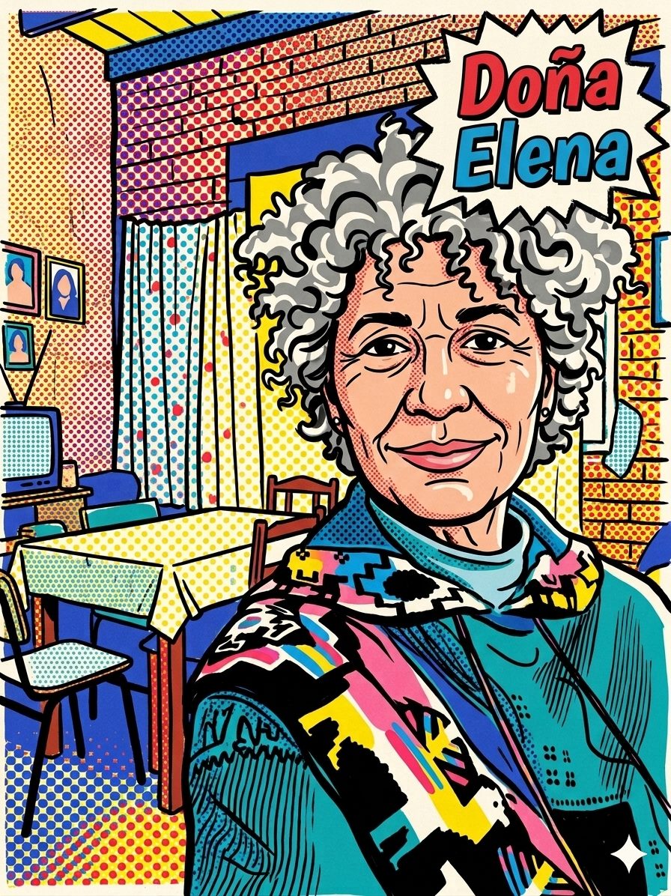
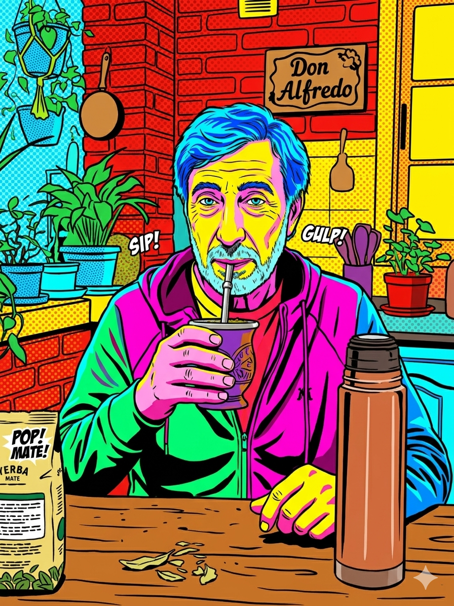
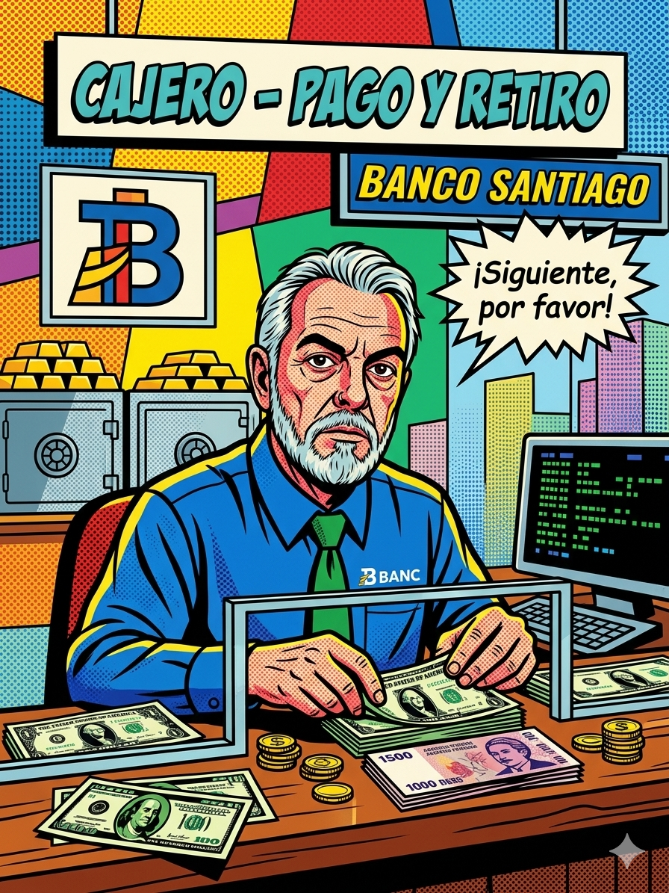
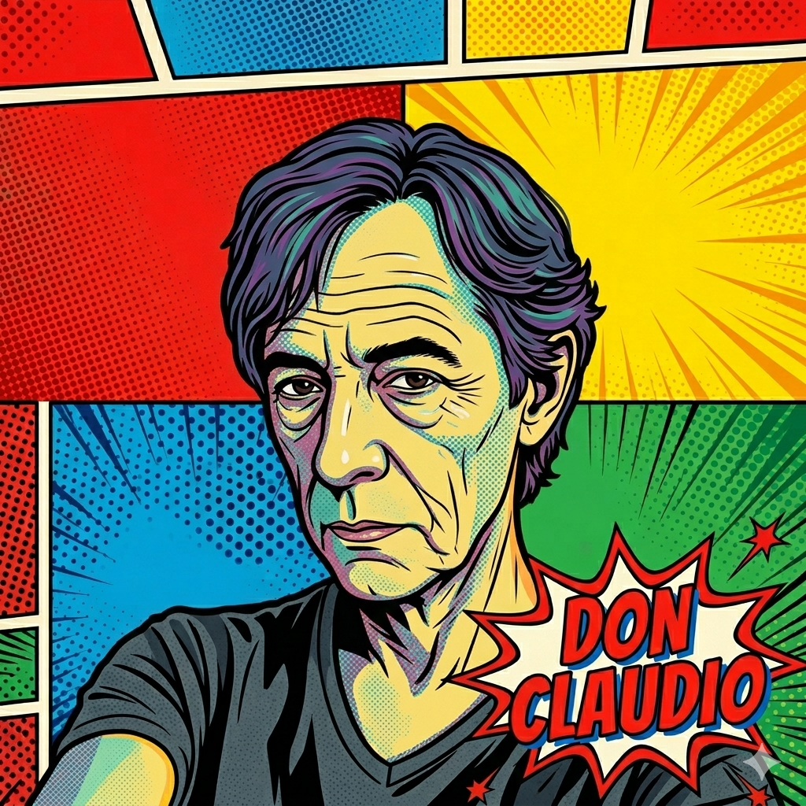
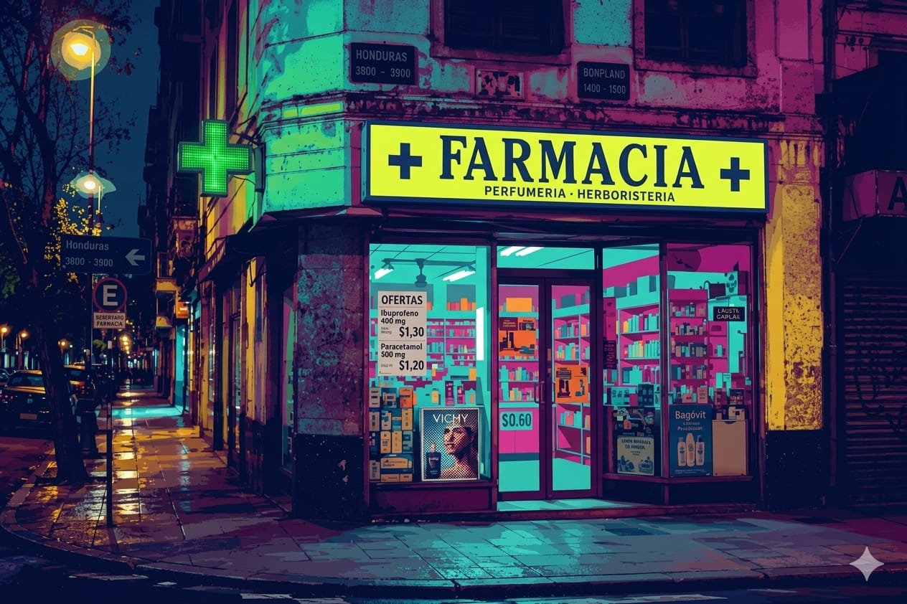
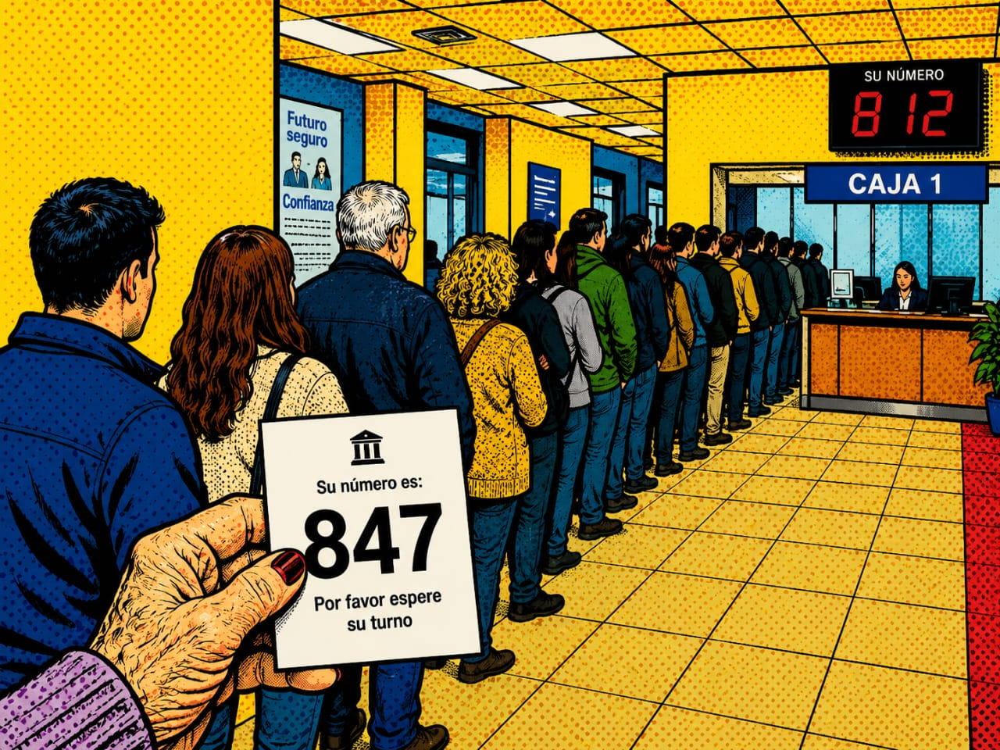

"En un sistema que nos quiere insumisxs, la resistencia es la clave" En honor a quienes luchan los miércoles
Definición del universo visual, sonoro y/o audiovisual
El universo visual será una historieta de comic construida mediante un trabajo analogico de stop motion, en donde el sonido acompañara desde una mirada audible de sonidos de ciudad y sonidos de la mente de Doña Elena el mundo audivisual será construido a partir de grabación exterior
Imagenes de referencia del mundo en construcción






Diseño de la interfaz y la experiencia de navegación
Para el diseño de interfaz nos proponemos trabajar a partir de una interfaz codificada en html, css y java
Estrategia de inmersión, actuación y participación del usuario
Sera en base de click de decisiones donde acompañe las travesias de nuestra personaja principal.